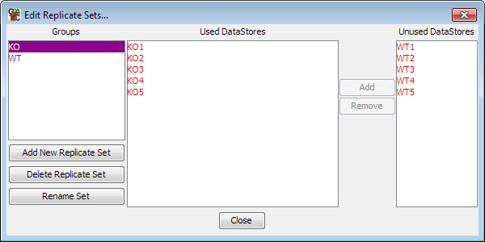
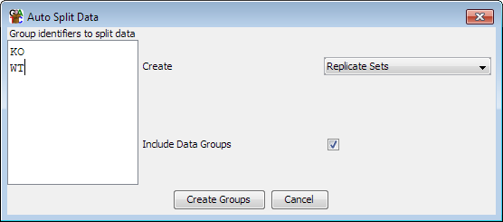

In many experiment designs it makes sense to group together a set of samples so they are treated as a single data store. There are two ways to group samples in SeqMonk and they serve different purposes.
Because quantitation in SeqMonk must be performed on both DataSets and DataGroups it is important that you create your groups as early as possible.
You can create data groups by selecting Data > Edit Groups. You can make as many groups as you like and assign as many samples as you like to each group. If it makes sense you can assign the same sample to more than one group - for example in the screenshot below the Male WT sample could be part of the male and WT groups.

The data group editor allows you to:
If you need to create groups in your experiment then it's a good idea to put all samples into groups (even if the group only contains one DataSet). This is beacuse when you come to doing quantitation this will act by default on just the DataGroups if you have any defined (although you can change this if you need to).
You create replicate sets in much the same way as data groups. First select Data > Edit Replicate Sets and then from the dialog which opens you can create or delete replicate sets and add or remove DataStores from sets which already exist. You can put a data store into more than one replicate set if this makes sense for your data.
If you have files which have a systematic naming scheme then you can use this to divide them into data groups or replicate sets. If you select Data > Auto Create Groups/Sets then you can supply a list of text strings which will be matched against your data set names and any datasets containing each pattern will be added to a data group or replicate set with the same name. If you want to have multiple text strings matched then you can use a pipe charachter to separate them.
